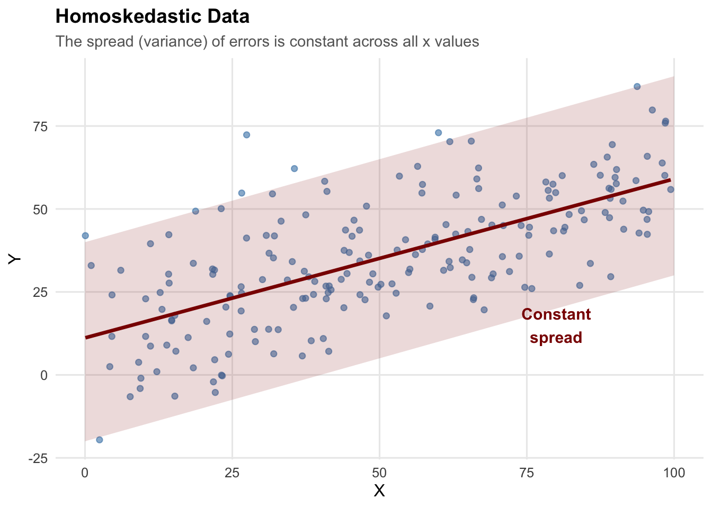
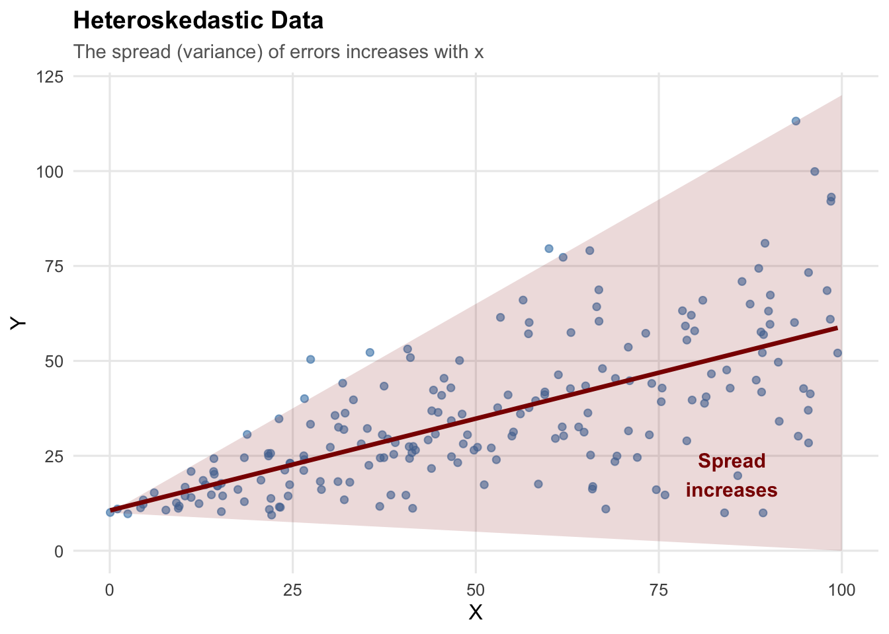
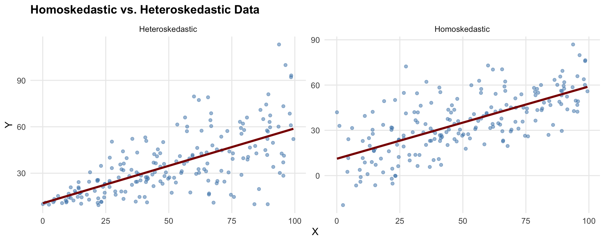
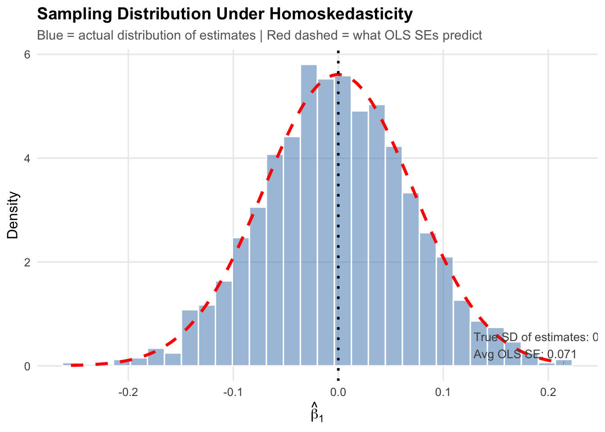
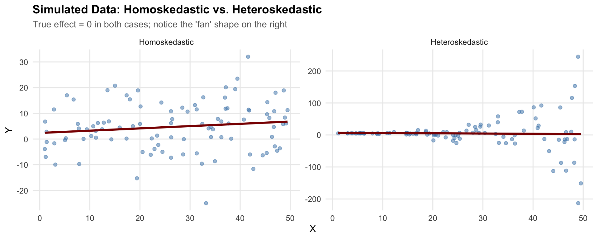
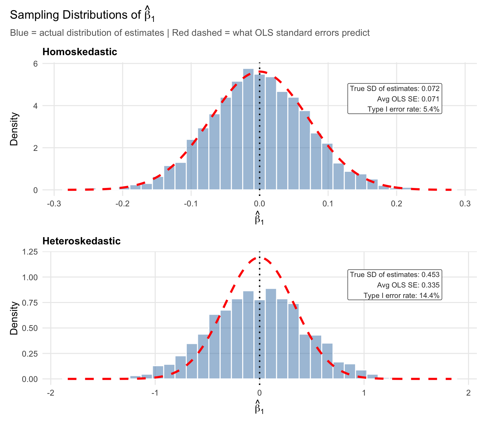
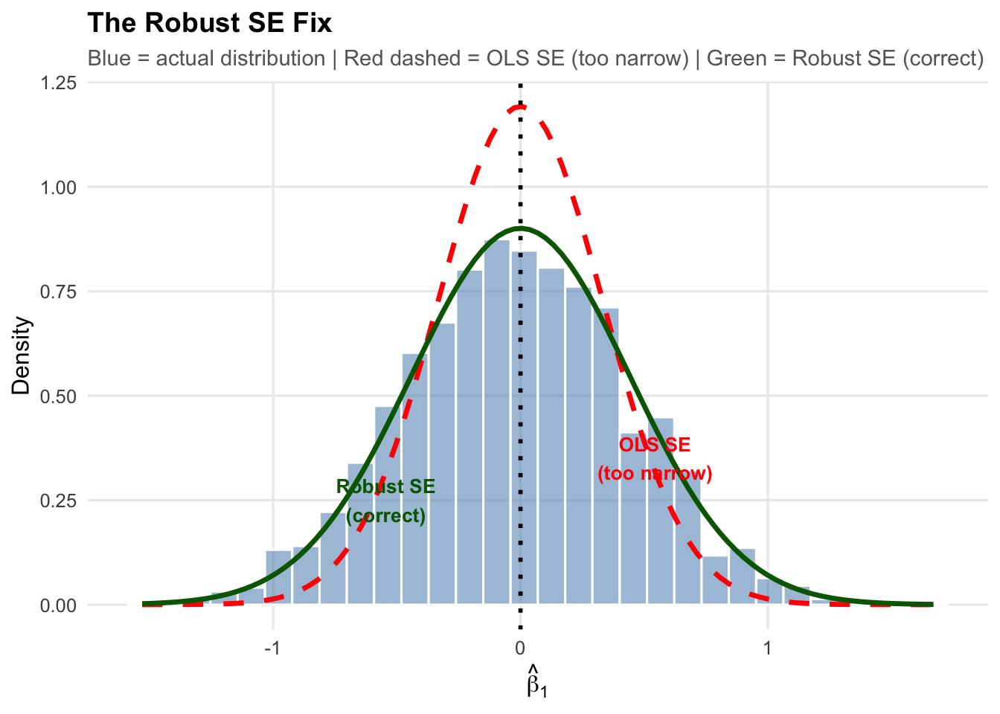
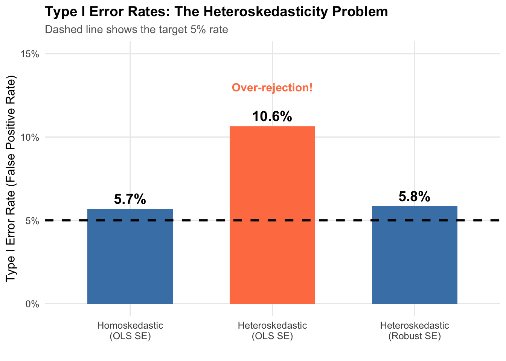
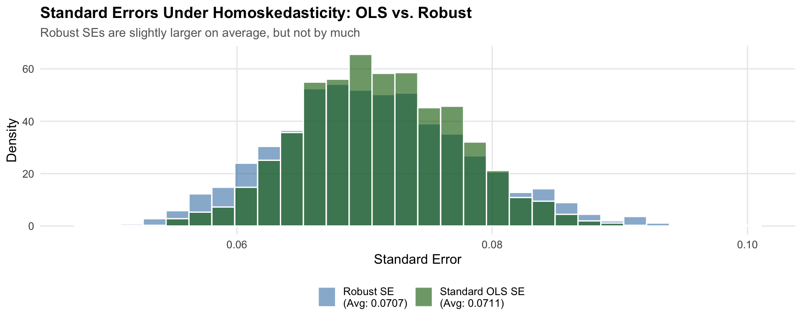

9 Heteroskedasticity
TipKey Questions
- What is homoskedasticity and why is it a Gauss-Markov assumption?
- What happens to OLS estimates when heteroskedasticity is present?
- How does heteroskedasticity affect hypothesis tests?
- What are heteroskedasticity-robust standard errors and when should we use them?
- What is the cost of using robust standard errors when they are not needed?
NoteSuggested Readings
- Wooldridge (2019), Ch. 8
One of the Gauss-Markov assumptions is that the variance of the error term is constant across all values of the explanatory variables. When this assumption fails, we have heteroskedasticity. Our coefficient estimates remain unbiased, but our standard errors become unreliable—and unreliable standard errors mean unreliable inference.
9.1 The Homoskedasticity Assumption
9.1.1 Gauss-Markov Assumption 5
Recall the Gauss-Markov assumptions that make OLS the Best Linear Unbiased Estimator (BLUE). The fifth assumption is homoskedasticity:
NoteHomoskedasticity
The error term \(\mu\) has the same variance given any value of the explanatory variables: \[Var(\mu | x_1, x_2, ..., x_k) = \sigma^2\] The variance is constant—it doesn’t depend on \(x\).
This assumption is crucial because it allows us to derive the correct formula for the variance of \(\hat{\beta}\), which in turn gives us valid standard errors, t-statistics, and p-values.
9.1.2 What Does Homoskedasticity Look Like?
In a homoskedastic regression, the spread of observations around the regression line is constant across all values of \(x\).
The “cone” of data points has roughly the same width whether \(x\) is small or large.
9.2 Heteroskedasticity: When Variance Changes
9.2.1 What Is Heteroskedasticity?
Heteroskedasticity occurs when the variance of the error term changes with the level of the explanatory variable: \[Var(\mu_i | x_i) = \sigma_i^2\]
The subscript \(i\) indicates that variance depends on observation \(i\)’s value of \(x\).
9.2.2 What Does Heteroskedasticity Look Like?
The classic pattern is a “fan” or “cone” shape, where the spread of data increases (or decreases) as \(x\) changes:

This pattern is common in economic data. For example:
- Income and consumption: Higher-income households have more variable consumption patterns
- Firm size and profits: Larger firms have more variable profit margins
- Experience and wages: More experienced workers have more variable wages
9.2.3 Side-by-Side Comparison

9.3 Why Does Heteroskedasticity Matter?
9.3.1 Coefficients Are Still Unbiased
Heteroskedasticity does NOT bias our coefficient estimates. Unbiasedness of OLS depends only on Gauss-Markov assumptions 1–4, not on homoskedasticity, so \(E[\hat{\beta}] = \beta\) still holds.
9.3.2 Standard Errors Are Wrong
The standard error formulas we have been using assume homoskedasticity. When that assumption is violated:
- The formula \(SE(\hat{\beta}_1) = \frac{\hat{\sigma}}{\sqrt{SST_x}}\) is invalid
- Computed standard errors will typically be too small
- So t-statistics are too large
- And p-values are too small
In other words, we reject the null hypothesis too often, even when it is true. This means we will be too confident in stating there is a “true” effect of \(x\) on \(y\) when there is in fact no statistically significant relationship.
9.3.3 Type I Error: A Quick Review
ImportantType I Error
A Type I error (false positive) occurs when we reject a true null hypothesis.
When we set \(\alpha = 0.05\), we’re accepting a 5% probability of making this error. If our test is working correctly, we should reject true null hypotheses exactly 5% of the time.
Another way to think about “rejecting the null too often” is in terms of Type I error. With heteroskedasticity and standard OLS standard errors, the actual Type I error rate can be much higher than 5%—sometimes 10%, 15%, or even higher.
9.4 Simulation: Seeing the Problem
9.4.1 Setup: Simulating Hypothesis Tests
To see the problem concretely, we simulate data where the true effect is zero (\(\beta_1 = 0\)) and check how often we incorrectly reject the null.
First, let’s look at the baseline distribution of estimates under homoskedasticity (where everything works correctly):
# Simulation parameters
n_sims <- 2000 # Number of simulations
n_obs <- 100 # Observations per sample
beta0_true <- 5 # True intercept
beta1_true <- 0 # True slope (NULL HYPOTHESIS IS TRUE!)
set.seed(42)
# Function for ONE simulation trial under HOMOSKEDASTICITY
run_homo_trial <- function(i) {
x <- runif(n_obs, 1, 50)
error <- rnorm(n_obs, mean = 0, sd = 10) # Constant variance
y <- beta0_true + beta1_true * x + error
model <- lm(y ~ x)
beta1_hat <- coef(model)["x"]
se_ols <- summary(model)$coefficients["x", "Std. Error"]
pval_ols <- summary(model)$coefficients["x", "Pr(>|t|)"]
return(data.frame(beta1_hat = beta1_hat, se_ols = se_ols, pval_ols = pval_ols))
}
# Run simulations
homo_results <- map_dfr(1:n_sims, run_homo_trial)
# Calculate rejection rate and average SE
homo_reject_rate <- mean(homo_results$pval_ols < 0.05)
homo_avg_se <- mean(homo_results$se_ols)
homo_true_sd <- sd(homo_results$beta1_hat)
Under homoskedasticity, the actual spread of the estimates (blue histogram) closely matches what the standard error formula predicts (red dashed curve). Confidence intervals and hypothesis tests work as intended: the Type I error rate is 5.4%, close to the nominal 5%, exactly the pre-defined level we are comfortable with.
9.4.2 Now With Heteroskedasticity
Now we run the same simulation with heteroskedastic errors—the variance of the error term increases with \(x\). Before looking at sampling distributions, here is what one draw of heteroskedastic data looks like next to homoskedastic data:

In both panels the true slope is zero, so the regression line should be flat. The difference is in the spread: on the left it is constant, while on the right it fans out as \(x\) increases.
Repeating this 2,000 times under each scenario gives us the sampling distribution of \(\hat{\beta}_1\):
# Function for ONE simulation trial under HETEROSKEDASTICITY
run_hetero_trial <- function(i) {
x <- runif(n_obs, 1, 50)
# Variance INCREASES with x (heteroskedasticity!)
error <- rnorm(n_obs, mean = 0, sd = x^3 * 0.001)
y <- beta0_true + beta1_true * x + error
model <- lm(y ~ x)
beta1_hat <- coef(model)["x"]
res_ols <- coeftest(model)
res_robust <- coeftest(model, vcov. = vcovHC(model, type = "HC1"))
return(data.frame(
beta1_hat = beta1_hat,
se_ols = res_ols["x", "Std. Error"],
se_robust = res_robust["x", "Std. Error"],
pval_ols = res_ols["x", "Pr(>|t|)"],
pval_robust = res_robust["x", "Pr(>|t|)"]
))
}
# Run simulations
hetero_results <- map_dfr(1:n_sims, run_hetero_trial)
# Calculate rejection rates and average SE
ols_reject_rate <- mean(hetero_results$pval_ols < 0.05)
robust_reject_rate <- mean(hetero_results$pval_robust < 0.05)
hetero_avg_se <- mean(hetero_results$se_ols)
hetero_true_sd <- sd(hetero_results$beta1_hat)
In the top panel (homoskedasticity), the red dashed curve tracks the blue histogram closely: the true SD of the estimates (0.072) nearly perfectly matches the OLS standard error (0.071) formula, and the Type I error rate is 5.4%.
Now look at the x-axis scale in the bottom panel. The estimates range much further from zero—the true SD is 0.453, roughly 6 times larger than under homoskedasticity. As can be seen, the OLS standard error formula (red line) is quite far off from the actually distribution of estimates, with the mass of estimates being much more spread out and shorter than the case with homoskedastic errors. The red curve is far too narrow for the actual distribution, and the resulting Type I error rate is 14.4%—more than twice the nominal 5%.
9.5 Heteroskedasticity-Robust Standard Errors
9.5.1 The Fix
Luckily, there is a relatively simple solution for this problem. Instead of using the standard error formula we have worked with so far, use a different formula for the standard errors—one that accounts for heteroskedasticity. These are called heteroskedasticity-robust standard errors (also known as White or Huber-White standard errors).
The standard OLS variance formula is: \[Var(\hat{\beta}_1) = \frac{\sum_{i=1}^{n}\hat{u}_i^2 / (n-2)}{SST_x^2}\]
The heteroskedasticity-robust formula is: \[Var(\hat{\beta}_1) = \frac{\sum_{i=1}^{n}(x_i - \bar{x})^2\hat{u}_i^2}{SST_x^2}\]
The key, intuitive difference is that robust standard errors weight each squared residual by how far its \(x_i\) is from the mean. This accounts for the fact that residuals may have different variances at different values of \(x\).
9.5.2 A Small Numerical Example
To make these formulas concrete, consider a small example with \(n = 8\) observations. The data have a clear heteroskedastic pattern—small residuals at low \(x\) and large residuals at high \(x\):
# A small dataset with obvious heteroskedasticity
# x-values are unevenly spaced (like income in thousands)
tiny <- tibble(
x = c(5, 10, 15, 20, 30, 50, 75, 100),
y = c(3.7, 7.5, 6.6, 9.2, 11.7, 24.3, 31.5, 78.6)
)
# Fit OLS
tiny_model <- lm(y ~ x, data = tiny)
# Pieces we need
tiny <- tiny |>
mutate(
uhat = residuals(tiny_model), # residuals
uhat_sq = uhat^2, # squared residuals
x_dev = x - mean(x), # (x_i - x-bar)
x_dev_sq = x_dev^2 # (x_i - x-bar)^2
)
tiny# A tibble: 8 × 6
x y uhat uhat_sq x_dev x_dev_sq
<dbl> <dbl> <dbl> <dbl> <dbl> <dbl>
1 5 3.7 4.69 22.0 -33.1 1097.
2 10 7.5 5.08 25.8 -28.1 791.
3 15 6.6 0.760 0.578 -23.1 535.
4 20 9.2 -0.0554 0.00306 -18.1 329.
5 30 11.7 -4.39 19.2 -8.12 66.0
6 50 24.3 -5.45 29.7 11.9 141.
7 75 31.5 -15.3 235. 36.9 1360.
8 100 78.6 14.7 216. 61.9 3829. The squared residuals (uhat_sq) at \(x = 75\) and \(x = 100\) are much larger than those at \(x = 10\) or \(x = 20\)—more variability at higher values of \(x\).
From here we can compute \(SST_x = \sum (x_i - \bar{x})^2\), the sum of squared deviations of \(x\):
SST_x <- sum(tiny$x_dev_sq)
SST_x[1] 8146.875Standard OLS variance pools all the squared residuals into a single estimate of \(\sigma^2\), then divides by \(SST_x\):
# Pooled variance estimate: sum of squared residuals / (n - 2)
sigma2_hat <- sum(tiny$uhat_sq) / (nrow(tiny) - 2)
# Standard OLS variance of beta1_hat
var_ols <- sigma2_hat / SST_x
# Standard OLS SE
se_ols <- sqrt(var_ols)
se_ols[1] 0.1058955This formula treats every residual the same—it averages them into one \(\hat{\sigma}^2\). When the error variance is constant, that is fine. But here the moderate residuals at low \(x\) are averaged with the large residuals at high \(x\), diluting the signal about how variable the estimate is.
Robust variance instead weights each squared residual by \((x_i - \bar{x})^2\), so observations far from \(\bar{x}\) get more say:
# Robust variance: sum of (x_i - x-bar)^2 * uhat_i^2, divided by SST_x^2
var_robust <- sum(tiny$x_dev_sq * tiny$uhat_sq) / SST_x^2
# Robust SE
se_robust <- sqrt(var_robust)
se_robust[1] 0.1342524The robust SE (0.134) is larger than the standard OLS SE (0.106). The observations farthest from \(\bar{x}\)—at \(x = 75\) and \(x = 100\)—receive the biggest \((x_i - \bar{x})^2\) weights, and those same observations have the largest squared residuals. The robust formula therefore gives more influence to the high-variance observations, while the standard formula averages them away.
9.5.3 Visualizing the Fix
Now, let’s plot the actual distribution of heteroskedastic estimates, the distribution as implied by the normal standard error formula (in red), and the distribution implied by the robust standard error forumula (in green):

The red dashed curve (standard OLS SEs) is too narrow. The green curve (robust SEs) matches the actual spread of the estimates.
9.5.4 Comparing Type I Error Rates
As a final check, let’s confirm that the robust SEs give us an acceptable Type 1 error rate (about 5%).

The first bar is the baseline: under homoskedasticity with standard OLS standard errors, the rejection rate is 5.4%.
The middle bar shows the problem. Under heteroskedasticity with the same OLS standard errors, the rejection rate jumps to 14.4%. Roughly 1 in 7 tests will turn up a significant result that does not exist.
The third bar shows the fix. Switching to robust standard errors brings the rejection rate back to 5.6%.
9.6 Implementing Robust Standard Errors in R
9.6.1 Using fixest
The fixest package makes this straightforward:
# Generate some heteroskedastic data
set.seed(123)
example_data <- tibble(
x = runif(200, 1, 50),
y = 5 + 0.5 * x + rnorm(200, 0, sqrt(0.1 * x^3))
)
# Standard OLS (wrong SEs with heteroskedasticity)
model_ols <- feols(y ~ x, data = example_data)
# With heteroskedasticity-robust SEs
model_robust <- feols(y ~ x, vcov = "HC1", data = example_data)# Compare the results
modelsummary(
list("Standard SE" = model_ols, "Robust SE" = model_robust),
stars = c("*" = 0.1, "**" = 0.05, "***" = 0.01),
gof_map = c("nobs", "r.squared")
)| Standard SE | Robust SE | |
|---|---|---|
| * p < 0.1, ** p < 0.05, *** p < 0.01 | ||
| (Intercept) | 6.415 | 6.415 |
| (7.236) | (5.311) | |
| x | 0.411* | 0.411 |
| (0.249) | (0.296) | |
| Num.Obs. | 200 | 200 |
| R2 | 0.014 | 0.014 |
The coefficients are identical—unbiasedness is unaffected. The standard errors differ (robust SEs are larger here), which changes the t-statistics and p-values.
Importantly, when using normal OLS standard errors, the estimate was statistically significant at the 10% level, since we had a p-value less than 0.1. However, with robust SEs, this is no longer the case: we can no longer reject the null hypothesis at any conventional threshold. This is an important analytical difference! We can see clearly that we may falsely conclude there is a “true” effect of our x variable when there is in fact not if we do not use the appropriate standard errors.
9.7 What If There’s No Heteroskedasticity?
If robust standard errors fix the problem when heteroskedasticity is present, what happens when we use them on homoskedastic data where the standard OLS formula is already correct?
Let’s take a look at the distribution of the different standard errors for the same homoskedastic data.
set.seed(321)
# Run simulation under HOMOSKEDASTICITY using robust SEs
run_homo_robust_trial <- function(i) {
x <- runif(n_obs, 1, 50)
error <- rnorm(n_obs, mean = 0, sd = 10) # Constant variance
y <- beta0_true + beta1_true * x + error
model <- lm(y ~ x)
res_ols <- coeftest(model)
res_robust <- coeftest(model, vcov. = vcovHC(model, type = "HC1"))
return(data.frame(
beta1_hat = coef(model)["x"],
se_ols = res_ols["x", "Std. Error"],
se_robust = res_robust["x", "Std. Error"],
pval_ols = res_ols["x", "Pr(>|t|)"],
pval_robust = res_robust["x", "Pr(>|t|)"]
))
}
homo_robust_results <- map_dfr(1:n_sims, run_homo_robust_trial)
# Rejection rates
homo_ols_reject <- mean(homo_robust_results$pval_ols < 0.05)
homo_robust_reject <- mean(homo_robust_results$pval_robust < 0.05)
# Average SEs
homo_ols_avg_se <- mean(homo_robust_results$se_ols)
homo_robust_avg_se <- mean(homo_robust_results$se_robust)
Each simulation produces both a standard OLS standard error and a robust standard error for the same regression. The figure plots the distribution of each across 2,000 simulations. If robust SEs impose a large cost under homoskedasticity, the green distribution would sit noticeably to the right of the blue one, meaning wider confidence intervals and lower power. In practice the two distributions nearly overlap.
The two SE estimates track each other closely. The average robust SE (0.0707) is slightly larger than the average OLS SE (0.0711)—a difference of about -0.6%. The Type I error rate is 4.9% with robust SEs versus 4.8% with standard SEs—both on target.
Why is the cost so small? Recall the two variance formulas. The standard formula uses \(\hat{\sigma}^2 / SST_x\), which pools all squared residuals into a single variance estimate. The robust formula uses \(\sum (x_i - \bar{x})^2 \hat{u}_i^2 / SST_x^2\), which weights each squared residual by \((x_i - \bar{x})^2\). When homoskedasticity holds, the squared residuals \(\hat{u}_i^2\) are roughly the same size everywhere, so the \((x_i - \bar{x})^2\) weights do not change much—the weighted average ends up close to the unweighted average. The two formulas converge toward the same answer, and the robust SE is only slightly noisier because it estimates observation-level variances rather than a single pooled \(\sigma^2\).
The cost of robust standard errors when homoskedasticity holds is therefore a small loss of efficiency (slightly wider confidence intervals). The cost of not using them when heteroskedasticity is present is a Type I error rate of 14.4% instead of 5%. The tradeoff is one-sided. For this reason, it is generally considered good practice to always report heteroskedasticity robust SEs when doing regression analysis. From this point forward, this is a habit you should get used to.
9.8 Summary
Heteroskedasticity is a common issue in economic data where the variance of errors changes with the explanatory variables.
Key Points:
- Heteroskedasticity does NOT bias coefficients - \(E[\hat{\beta}] = \beta\) still holds
- Heteroskedasticity DOES invalidate standard errors - leading to incorrect inference
- The main symptom is inflated Type I error rates - we reject true nulls too often
- The solution is simple: use robust standard errors - specify
vcov = "HC1"infeols()
Best Practice: Always use heteroskedasticity-robust standard errors. They’re valid whether or not heteroskedasticity is present, so there’s no downside to using them.
9.9 Check Your Understanding
For each question below, select the best answer from the dropdown menu.
TipShow Explanation
Heteroskedasticity means the variance of the error term is not constant—it changes depending on the value of x. For example, variance might increase with x, creating a “fan” pattern in the data.
No, heteroskedasticity does NOT cause bias in coefficient estimates. Unbiasedness depends only on Gauss-Markov assumptions 1-4 (linearity, random sampling, no perfect collinearity, zero conditional mean). The homoskedasticity assumption (GM5) affects efficiency and inference, not unbiasedness.
When heteroskedasticity is present but ignored, the standard error formula is wrong. Typically, standard errors are underestimated, making t-statistics too large and p-values too small. This leads to rejecting true null hypotheses too often (inflated Type I error rate).
The classic sign of heteroskedasticity is a “fan” or “cone” shape in the residual plot, where the spread of residuals increases (or decreases) as the fitted values change. Constant spread would indicate homoskedasticity.
Robust standard errors are valid whether or not heteroskedasticity exists. Without heteroskedasticity, they are slightly less efficient but still correct. With heteroskedasticity, they are correct while standard SEs are wrong.
Robust SEs larger than standard OLS SEs suggest heteroskedasticity is present. The standard formula is underestimating the true variability in β̂ because it pools residual variance across all observations rather than weighting by leverage.
Wooldridge, Jeffrey M. 2019. Introductory Econometrics: A Modern Approach. 7th ed. Cengage Learning.